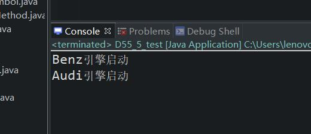

原文连接:https://www.cnblogs.com/ruigege0000/p/11961068.html
一、接口的作用
1.可以使项目分层，所有层都面向接口开发，开发效率提高了。
2.接口使代码和代码之间的耦合度降低，就像内存条和主板的关系，变得“可插拔”，可以随意切换。
总结：接口和抽象类能够完成某个功能，优先选择接口。因为接口可以多实现、多继承。并且一个类除了实现接口之外，还可以去继承其他类（保留了类的继承）。
层次为：
测试类=====接口=====实现类
我们首相定义好接口，然后测试类使用接口定义好的变量或者方法进行调用，实现类则根据接口的定义来编写接口的实现类。
例如：Jiekou j1 = new Shixianlei();其中类Shixianlei是接口Jiekou的实现。
二、这里举个例子
（1）创建一个"引擎“接口
（2）创建”奔驰“和”奥迪“两个引擎接口的实现类
（3）创建一个”车”类，里面可以加入两种引擎
（4）最后创建一个测试类，用来测试两种引擎的车
package com.bjpowernode.java_learning;
public interface D55_1_Engine {
public void launch();
}
package com.bjpowernode.java_learning;
public class D55_2_Benz implements D55_1_Engine{
public void launch() {
System.out.println("Benz引擎启动");
}
}
package com.bjpowernode.java_learning;
public class D55_3_Audi implements D55_1_Engine {
public void launch() {
System.out.println("Audi引擎启动");
}
}
package com.bjpowernode.java_learning;
public class D55_4_Car {
D55_1_Engine e;//这个类中的成员变量创建的必要性，这是为了能够让引擎的对象传进来，进行引擎对象的调用
D55_4_Car(D55_1_Engine e){
this.e = e;
}
public void testEngine() {
e.launch();
}
}
package com.bjpowernode.java_learning;
public class D55_5_test {
public static void main(String[] args) {
//生产引擎
D55_1_Engine e1 = new D55_2_Benz();
D55_1_Engine e2 = new D55_3_Audi();
//生产汽车
D55_4_Car c1 = new D55_4_Car(e1);
D55_4_Car c2 = new D55_4_Car(e2);
c1.testEngine();
c2.testEngine();
}
}

三、源码：
D55_1_Engine.java
D55_2_Benz.java
D55_3_Audi.java
D55_4_Car.java
D55_5_test.java
地址：
https://github.com/ruigege66/Java/blob/master/D55_1_Engine.java
https://github.com/ruigege66/Java/blob/master/D54_2_InterfaceExercise.java
https://github.com/ruigege66/Java/blob/master/D55_3_Audi.java
https://github.com/ruigege66/Java/blob/master/D55_4_Car.java
https://github.com/ruigege66/Java/blob/master/D55_5_test.java
2.CSDN：https://blog.csdn.net/weixin_44630050（心悦君兮君不知-睿）
3.博客园：https://www.cnblogs.com/ruigege0000/
4.欢迎关注微信公众号：傅里叶变换，个人公众号，仅用于学习交流，后台回复”礼包“，获取大数据学习资料